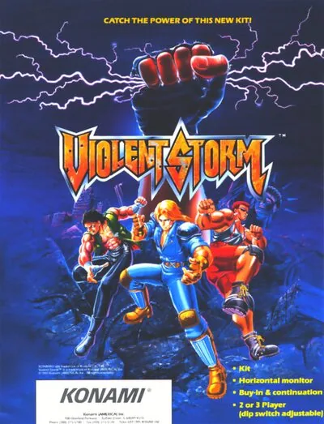

FBA (FinalBurn Alpha)
Violent Storm
- Año: 1993
- Desarrollador: Konami
- Género: Lucha / 2.5D
- Jugadores: 4 jugadores
Violent Storm es un beat 'em up de desplazamiento lateral para hasta tres jugadores, ambientado tras la Tercera Guerra Mundial. Los supervivientes intentan reconstruir su mundo, pero bandas violentas los aterrorizan. Tres justicieros, «Boris», «Wade» y «Kyle», intentan proteger a los ciudadanos, pero la malvada y corrupta banda «GELD» se lo pone difícil. Mientras patrullan las calles, ven cómo la banda secuestra a su amiga Sheena. Deben atravesar siete fases llenas de enemigos para rescatarla y acabar con la banda.
Además de los puñetazos y patadas normales, cada personaje tiene un ataque especial capaz de derribar a varios enemigos a la vez, pero que cuesta algo de salud cada vez que se usa. La salud se recupera con la comida escondida en cajas y barriles rompibles.
Algunos miembros de la banda sueltan un arma al caer, y los jugadores pueden recogerla y usarla. Las cajas y barriles rompibles también contienen armas y objetos de bonificación al azar. Los enemigos aturdidos caen al suelo y se les puede seguir atacando tumbados.
Controles
que B ataque y A salte. ¿Qué hace R? Los dos jugadores a la vez.
Tres botones, todos en la fila de abajo.
| Panel | Juego |
|---|---|
 | Atacar (⚠️ confirmar) |
 | Saltar (⚠️ confirmar) |
 | Por confirmar |
  | Empezar |
 | Meter una moneda |
+  | Salir del juego |
El panel en FBA (FinalBurn Alpha)

Argumento
Recopilado de internet (2026-11-03). Lo marcado con ⚠️ no está probado en la bartop.
Ha terminado la Tercera Guerra Mundial y la gente intenta reconstruir las ciudades, pero las bandas atacan a los que no pueden defenderse. La peor es la banda de Geld.
Los protagonistas son Wade, Boris y Kyle, tres luchadores que protegen a los débiles. Un día, mientras patrullan, ven a su amiga Sheena salir del supermercado. En ese momento, Red Freddy, la mano derecha de Lord Geld, la rapta en su moto.
Final: tras vencer a Red Freddy en el museo, queda Lord Geld, que parece un niño con capa sentado en su trono y se levanta convertido en un gigante musculoso con poderes psíquicos. Al vencerlo, Sheena queda a salvo. Si se juega en equipo, se la lleva el jugador que da el último golpe.
Fuentes
Jugabilidad
Recopilado de internet (2026-11-03). Lo marcado con ⚠️ no está probado en la bartop.
- Tipo de juego: beat 'em up de Konami (1993). Hasta tres jugadores a la vez. Siete fases y el jefe final (ver «Guía de niveles»).
- Personajes:
- Wade: el equilibrado y líder informal del grupo; su especialidad es el gancho.
- Boris: el más fuerte, con cuatro llaves y quebrantahuesos; puede golpear a los enemigos caídos.
- Kyle: el rápido, con menos fuerza; sus patadas rápidas paran a los enemigos que cargan.
- Llaves a enemigos grandes: si Wade o Kyle intentan una llave a un enemigo pesado o a un jefe, este puede soltarse y tirarlos (salvo que se pulse el botón de ataque muy rápido). Solo Boris levanta a cualquiera.
- Movimientos ocultos: cada personaje tiene algunos.
- Armas: cuchillos, tuberías, bombas, cubos de basura y más, que llevan los enemigos.
Fuentes
Guía de niveles
Recopilado de internet (2026-11-03). Lo marcado con ⚠️ no está probado en la bartop.
| Fase | Ambiente y jefe |
|---|---|
| 1 | Estación · Dabel |
| 2 | Tren · Joe |
| 3 | Centro de la ciudad (tabernas con trampillas) · Drigger |
| 4 | Zona industrial (fundición) · Doyle |
| 5 | Parque (jardín botánico) · Mr. Julius |
| 6 | Puerto · Sledge |
| 7 | Museo · Red Freddy |
| Final | Lord Geld |
Cómo vencer a los jefes, según StrategyWiki:
- Dabel: gordo con una maza enorme; al golpear el suelo hace caer chatarra. Cuidado con sus cargas.
- Joe: revisor con una taladradora eléctrica; cuando la pierde, llama a sus compañeros con una campanilla. Al final lucha a mano.
- Drigger: luchador de jaula con calavera de tigre; muchas llaves y un cabezazo en plancha. Se levanta cada vez más rápido cuando le queda poca vida.
- Doyle: dentro de una máquina con brazos que agarran de lejos. Mejor combos y ataques con carrera; no saltar, porque agarra en el aire.
- Mr. Julius: estatua de piedra con vida; golpes fuertes, llaves y patadas giratorias.
- Sledge: muy rápido y con placas que paran los golpes de frente. No fiarse de los combos largos: mejor ataques en el aire y con carrera.
- Red Freddy: salta, barre, golpea con el pelo y corta con sus garras; cuidado con su ataque giratorio.
- Lord Geld: el jefe final, con ataques psíquicos.
El vídeo de «Vídeos» incluye una segunda vuelta, la Violent Round. ⚠️ No he encontrado cómo se activa ni qué cambia.
Fuentes
Objetos
Recopilado de internet (2026-11-03). Lo marcado con ⚠️ no está probado en la bartop.
| Objeto | Qué hace |
|---|---|
| Muñeco de TwinBee | Puntos |
| Saco que tapa la cara de Dabel | Muchos puntos: se le cae si se le dan bastantes golpes hacia arriba |
| Cerdito (fase 2) | Al cogerlo se convierte en un balón para lanzar a los enemigos (rebota varias veces antes de poder recogerlo) |
| Máquina recreativa de Pentarou (fase 7) | Da puntos al romperla |
Fuentes
Trucos y secretos
Recopilado de internet (2026-11-03). Lo marcado con ⚠️ no está probado en la bartop.
Secretos
- Máscara de Dabel: golpearle hacia arriba hasta que se le caiga el saco y cogerlo.
- Guiños a Konami: el muñeco de TwinBee y la recreativa de Pentarou, de la saga Parodius.
- Violent Round: segunda vuelta que se ve en el vídeo de «Vídeos». ⚠️ Sin fuente sobre cómo se activa.
- Final a dos o tres: Sheena se va con el jugador que da el último golpe a Lord Geld.
⚠️ No he encontrado trucos de botones de la recreativa en las fuentes consultadas.
Fuentes
Longplay

Partida completa de la recreativa, con la Violent Round (59 min), de AL82 Retrogaming Longplays: Violent Storm Longplay (Arcade) [4K].
Pulsa el minuto de un nivel para ver el vídeo desde ese punto.
Fases
| Fase | Momento |
|---|---|
| Fase 1 | |
| Fase 2 | |
| Fase 3 | |
| Fase 4 | |
| Fase 5 | |
| Fase 6 | |
| Fase 7 | |
| Jefe final | |
| Final |